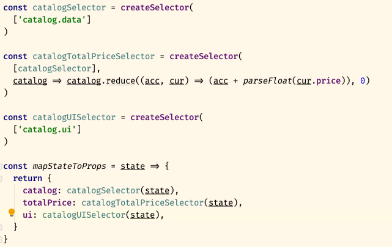

React-based application.
CSSSR, 2019
Примерный план
- В чем проблема? Какие есть решения?
- Почему CRA?
- Redux
- CSS, UI
- Тестирование
- Дальнейшее развитие приложения
В чем проблема?
- React — только View
- А нужно:
- роутинг;
- управление состоянием;
- синхронизация с бекендом;
- инструменты отладки;
- ...
Google [react boilerplate]:
~ 805 000
результатов
Почему CRA?
- Less to Learn (
babel, webpack, jest, etc)

- Only One Dependency (
react-scripts)
- No Lock-In (
eject)
- Easy to maintain (
react-scripts@latest)
Начинаем кодить
npx create-react-app my-app
cd my-app
npm start
или codesandbox

Добавляем инструменты для отладки
Один CRUD —
300 строк кода
redux-starter-kit, установка
yarn add redux-starter-kit
Селекторы, мемоизация,
иммутабельность
Селекторы — вычисления данных на основе state.

Перерыв 5 мин
Задавайте вопросы, за лучший будет приз!
Секция вопросов и ответов
Дальнейшее развитие приложения
Спасибо!